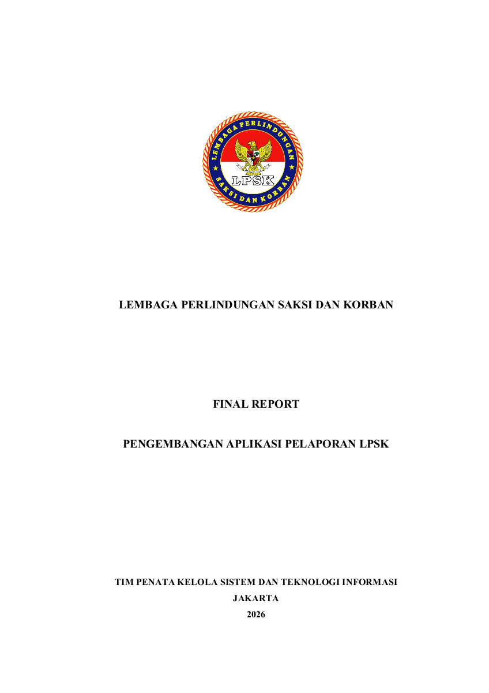
Open to Work
LPSK Reporting System Focus
Information Systems | Web Development
Muhamad Rafi Yulian
Information Systems Graduate focused on web-based reporting systems and IT operations support.
Saya memiliki minat pada pengembangan aplikasi berbasis web, analisis kebutuhan sistem, pengelolaan database, pengujian, dan dokumentasi teknis. Pengalaman utama saya adalah mendukung pengembangan Aplikasi Pelaporan LPSK Berbasis Website menggunakan Laravel, MySQL, Bootstrap, RBAC, dan konsep MVC.
0
Core system modules
0
Months at LPSK
0
Information Systems GPA


Role
Information Systems & IT Support
Stack
Laravel, MySQL, RBAC
Primary Focus
LPSK Reporting Application
My Journey
LIVEApplication Preview
Portfolio Case Study
Interactive Reporting System
Demo Aplikasi Pelaporan LPSK
Preview sistem pelaporan internal LPSK berbasis website yang menampilkan alur monitoring, penugasan, penetapan, arsip, dan kelola admin secara langsung di portfolio.
Live Application Preview
Tampilan mengikuti pola aplikasi pelaporan asli: sidebar, monitoring kalender, tabel laporan, arsip, admin, dan notifikasi interaktif.
Klik menu di dalam demo untuk melihat alur aplikasi pelaporan. Data bersifat simulasi dan tidak disimpan.
Tahun
Reporting Documentation
Dokumen Pendukung Pelaporan LPSK
Final report dan user manual ditampilkan sebagai pelengkap demo agar alur kerja pelaporan dan panduan aplikasi webnya bisa dipelajari dengan lengkap.
LPSK Gallery
Sertifikat dan dokumentasi kegiatan sebagai bagian dari perjalanan pembelajaran, pengalaman kerja, dan pengembangan kompetensi profesional.
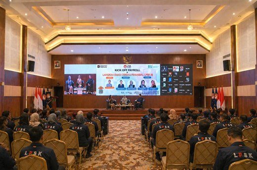
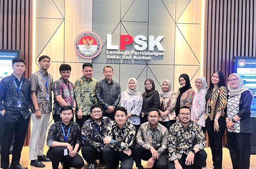
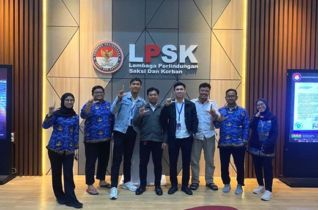
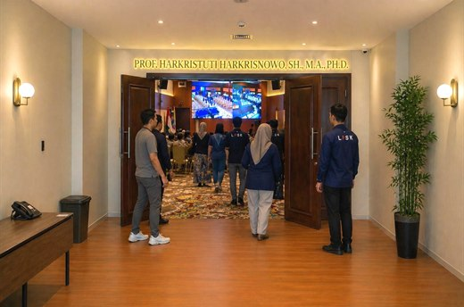
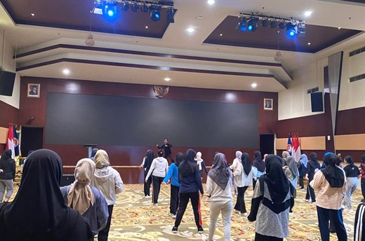
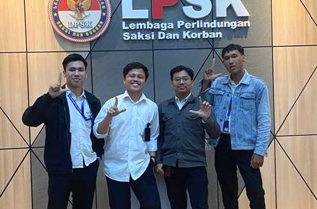
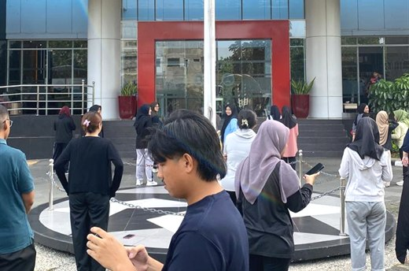
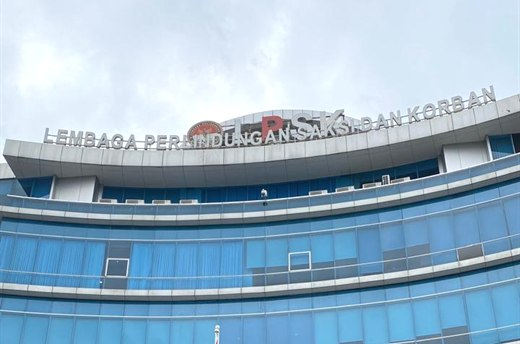
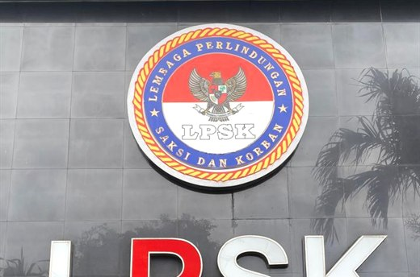
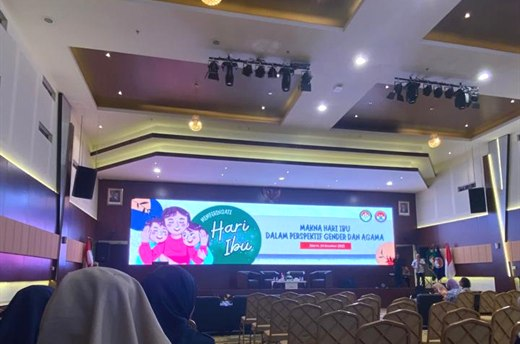
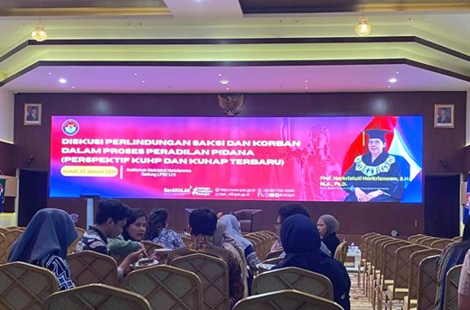
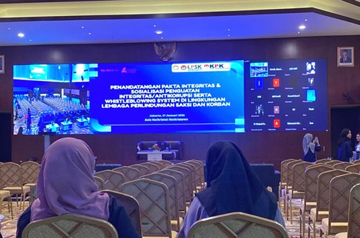
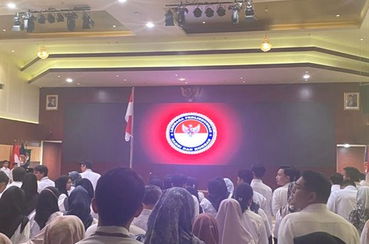
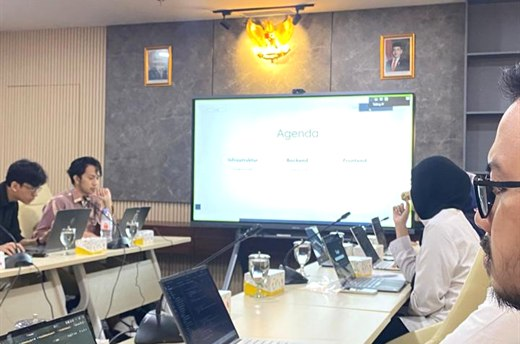
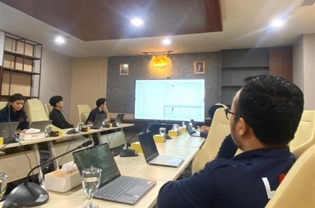
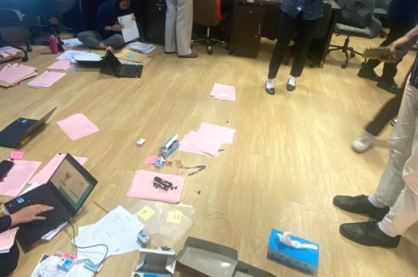
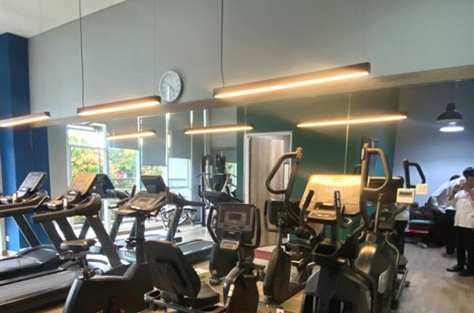
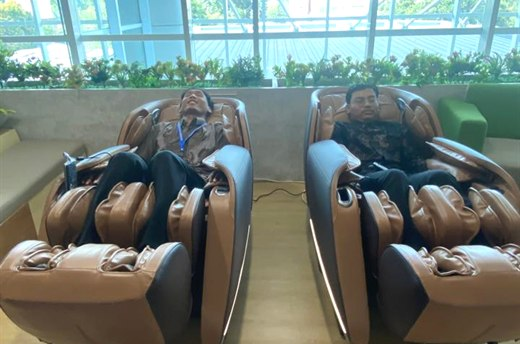
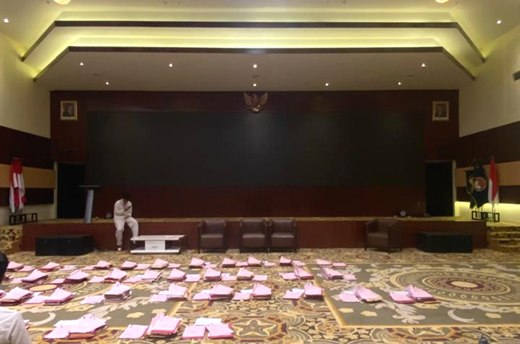
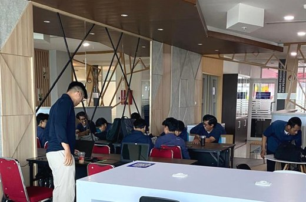
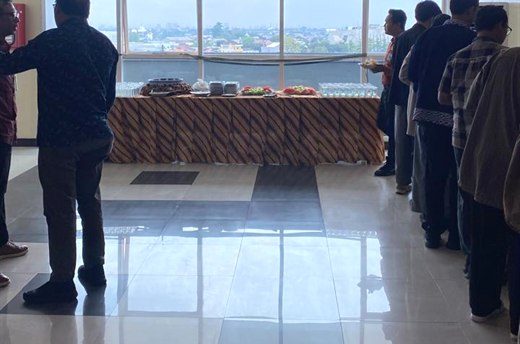
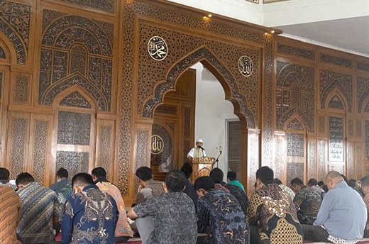
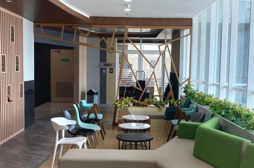
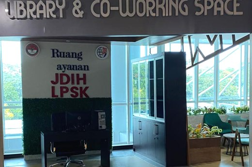
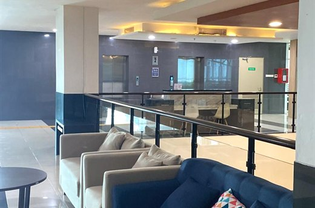
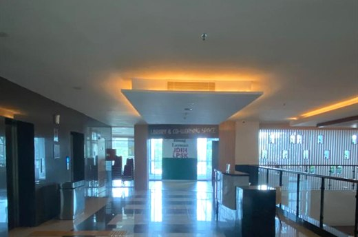
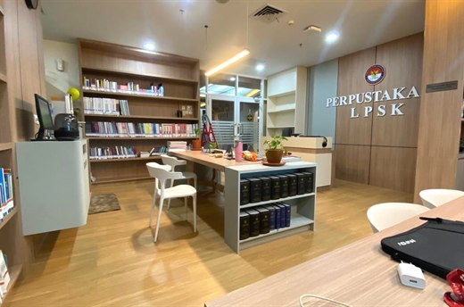
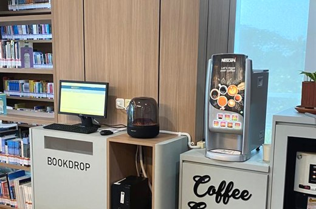
Roadmap
Journey
A concise path of learning, volunteering, business, digital programs, and information systems work.
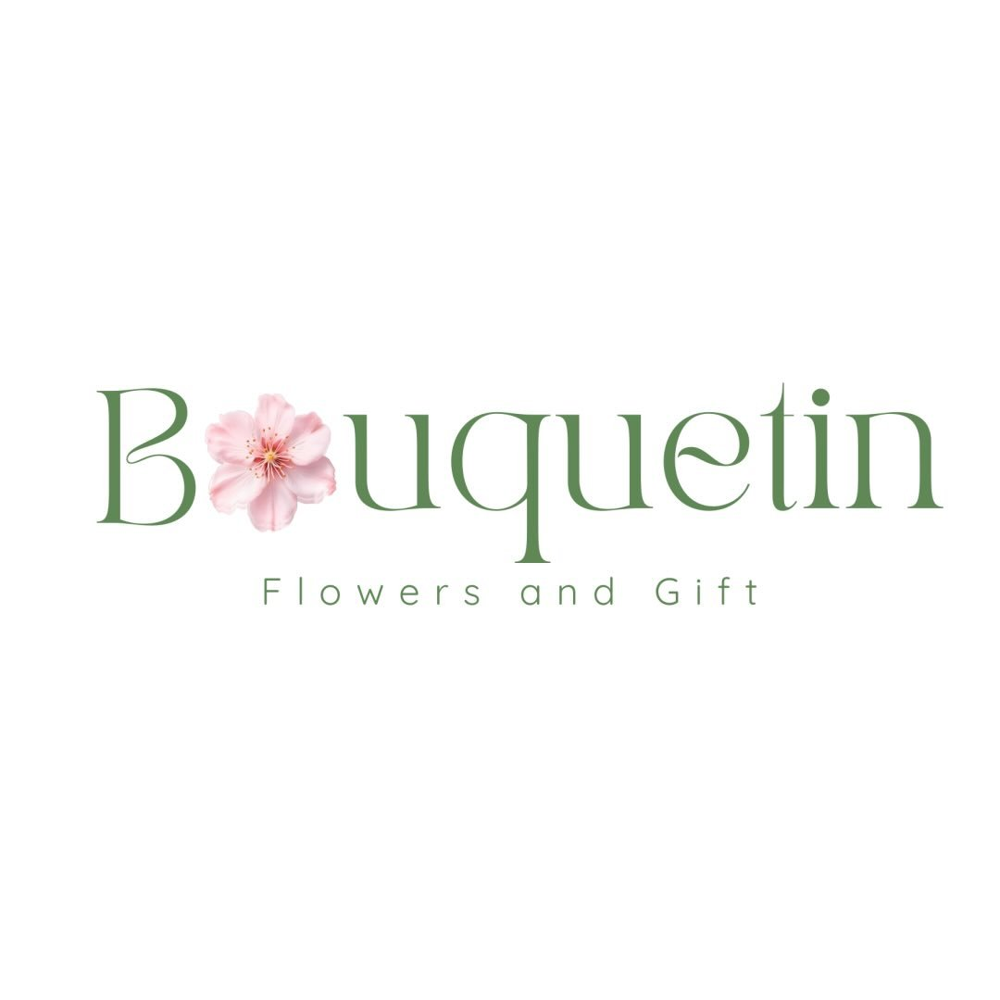
Jun 2021 - Present
Bouquetin.id
Built a bouquet service, sold 300+ products, and managed content-led sales.
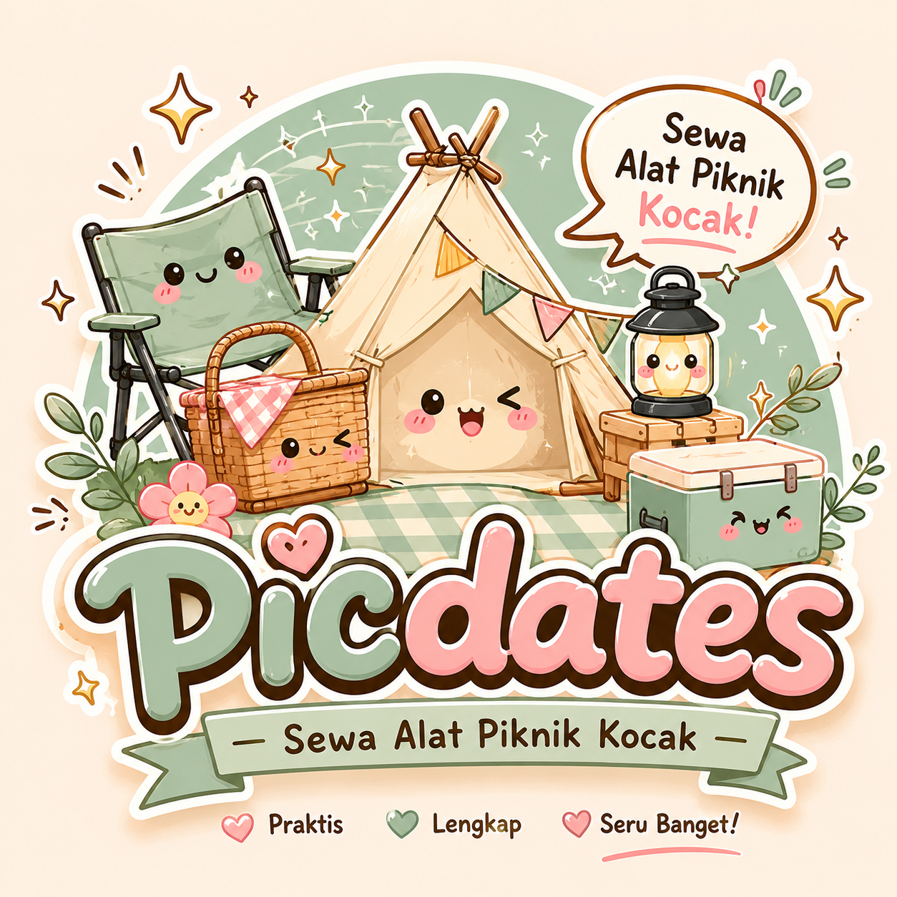
Jun 2021 - Present
Picdates
Supported picnic rental sales through Instagram content and digital promotion.
Sep 2021 - Sep 2025
STT Terpadu Nurul Fikri
Graduated in Information Systems with GPA 3.58/4.00.
Sep 2021 - Jan 2022
Microsoft Office
Strengthened document, spreadsheet, and presentation skills for professional work.
Feb 2022 - Aug 2022
Graphic Design
Practiced visual content creation with Canva, GIMP, and Inkscape.
May 2022 - Jan 2023
LDK Senada STTNF
Supported HR development, member coordination, and internal seminars.
Aug 2022 - Jan 2023
Cloud & Web Instant
Learned WordPress setup, hosting, content management, and web optimization.
Jan 2023 - Jul 2023
Video Editing
Practiced trimming, audio adjustment, transitions, and simple visual storytelling.
Aug 2023 - Dec 2023
NF Academy - MSIB 5
Completed a digital marketing academy project covering SEO, e-commerce, and CRM.
Feb 2024 - Jun 2024
1000 Startup Digital
Learned design thinking, MVP validation, customer archetypes, growth, and pitching.
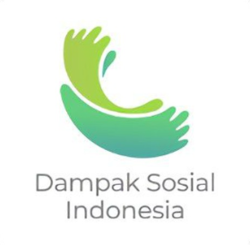
Mar 2024
Dampak Sosial Indonesia
Joined an inclusive creative activity with upcycling, totebag painting, and iftar.
Mar 2024
KT&G SangSang Univ.
Participated in a school painting project and bouquet arrangement workshop.
Jun 2024 - Jan 2025
LPPM STTNF
Supported webinar coordination and technical operations for IT education seminars.
Nov 2025 - May 2026
LPSK RI
Contributed to a Laravel reporting system with RBAC, monitoring, testing, and documentation.
Project Case Studies
The LPSK reporting system is the featured project. Other projects support the broader profile.

Featured Project | Web Development / Information System
Aplikasi Pelaporan LPSK Berbasis Website
Sistem informasi pelaporan internal berbasis website yang dikembangkan untuk mendukung proses administrasi dan monitoring laporan di lingkungan LPSK. Lingkup kontribusi mencakup modul pelaporan, monitoring, approval workflow, arsip, upload dokumen, manajemen pengguna, RBAC, middleware authorization, Black Box Testing, dan dokumentasi teknis.
FocusOperational reporting digitalization
MethodMVC, RBAC, testing, documentation
OutcomeClearer reporting and monitoring workflow
Supporting Projects
Marketing and business projects are shown as complementary strengths, not the main positioning.

Bonus Skill | Digital Marketing
MSIB Digital Marketing Academy - Abinaveils
Final project online store hijab dengan market research, customer analysis, content planning, product photography, financial report, SEO, dan presentation.

Bonus Skill | Creative Business
Bouqetin.id
Usaha bouquet dan florist bersama partner dengan pengelolaan konten Instagram, dokumentasi produk, pelayanan pelanggan, dan operasional bisnis sederhana.

Bonus Skill | Service Business
Picdates
Usaha penyewaan alat piknik dengan pengelolaan katalog layanan, konten Instagram, dokumentasi pelanggan, dan promosi digital.
Skills
Skills are ordered to support the LPSK and web development positioning first.
Web Development
HTML, CSS, JavaScript, PHP, Laravel, Bootstrap, Front-End Development
Information System
MVC, RBAC, Middleware, System Analysis, UI/UX Implementation, Technical Documentation
Database & Testing
MySQL, phpMyAdmin, Black Box Testing, data flow understanding, functional validation
Tools
GitHub, VS Code, Microsoft Word, Excel, PowerPoint, WordPress
Marketing Bonus
Market Research, SEO Analysis, Customer Analysis, Social Media Marketing, Content Planning
Design & Content
Canva, GIMP, Inkscape, Video Editing, product documentation, presentation material
Certificates
Certificate placeholders are ready for real documents later.

Microsoft Office Professional
NF Computer Training Center, Aug 2021 - Jan 2022

Desain Grafis
Canva, GIMP, and Inkscape training, Feb 2022 - Aug 2022

Cloud and Web Instan
WordPress and cloud-based website management, Aug 2022 - Jan 2023

Editing Video
Hendevane Indonesia, Jan 2023 - Jul 2023
Human Resource Development / Organization Certificate
Organizational experience through LDK Senada STTNF and community activities.
Contact
Available for Web Developer, IT Staff, Information Systems, and digital project roles.
- Emailrafiyulian@gmail.com
- Phone+62 857-7745-6596
- Location
Bogor, West Java, Indonesia
- LinkedInlinkedin.com/in/muhamad-rafi-yulian
- GitHubPlaceholder
- InstagramPlaceholder